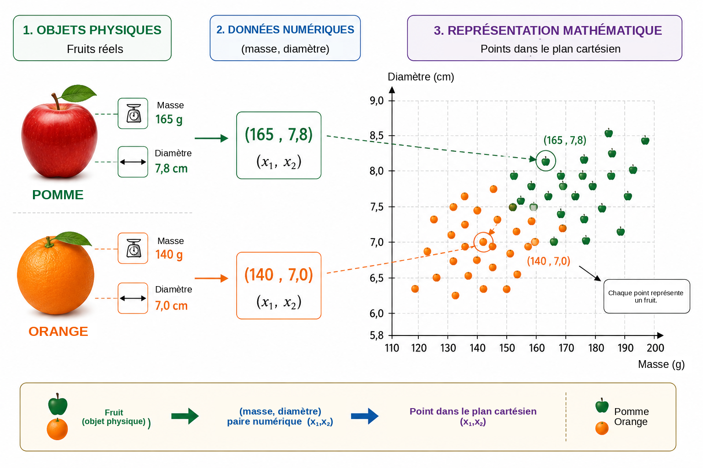
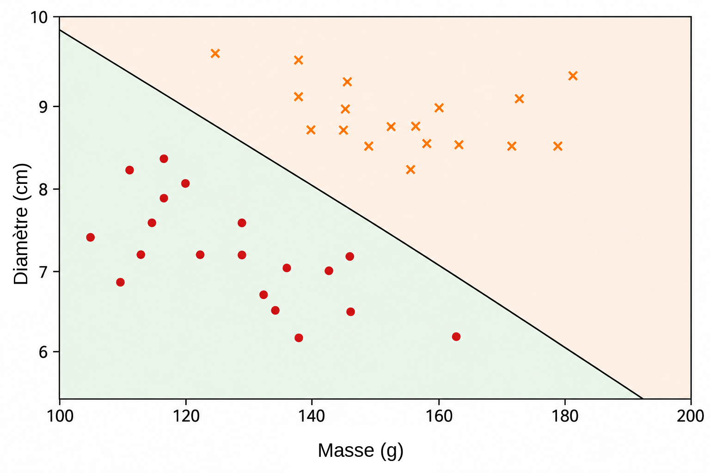
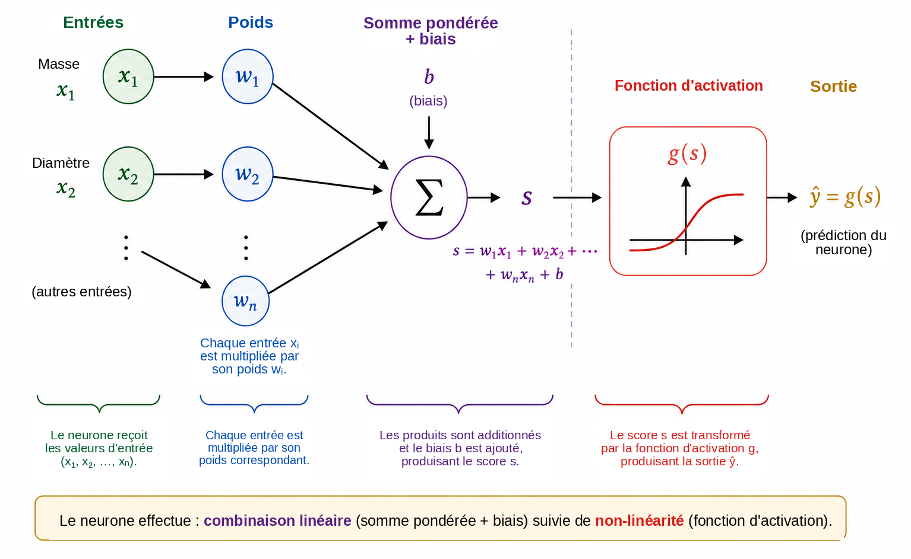
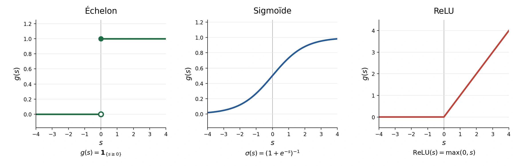
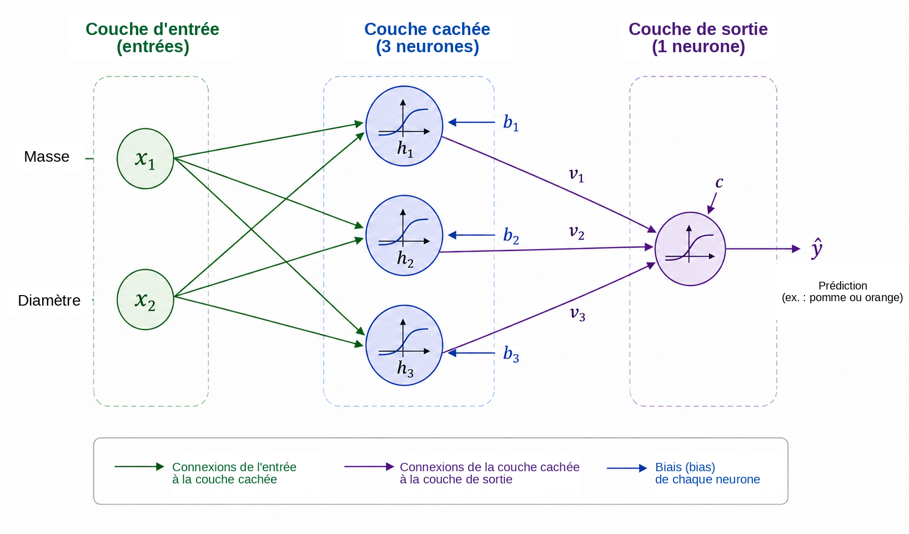
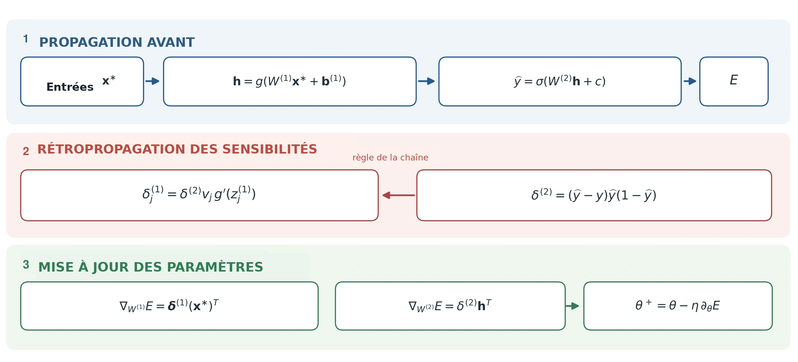
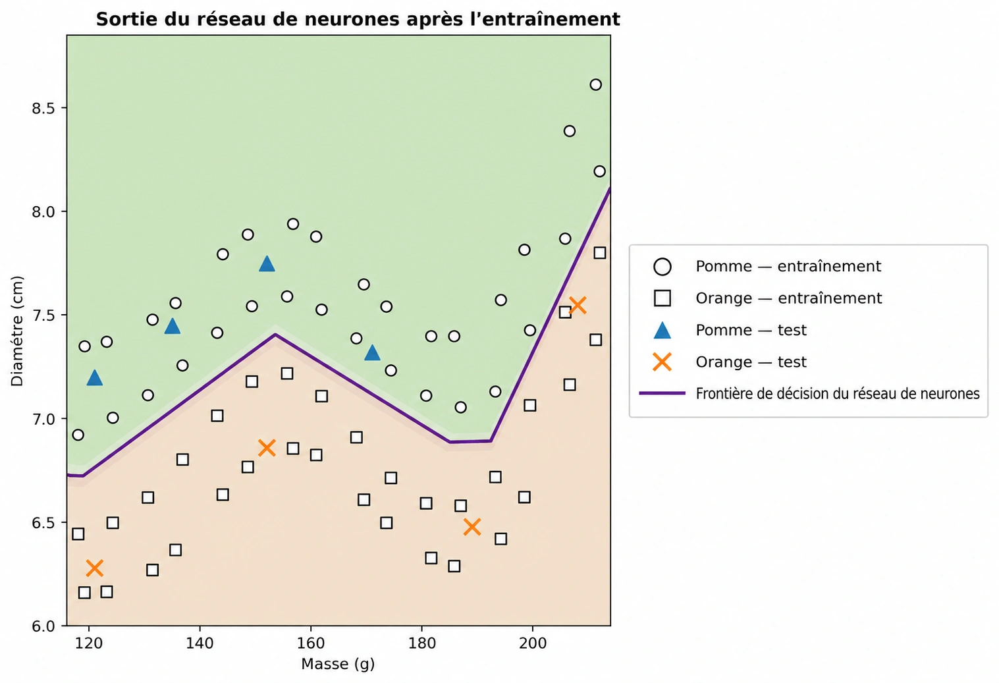
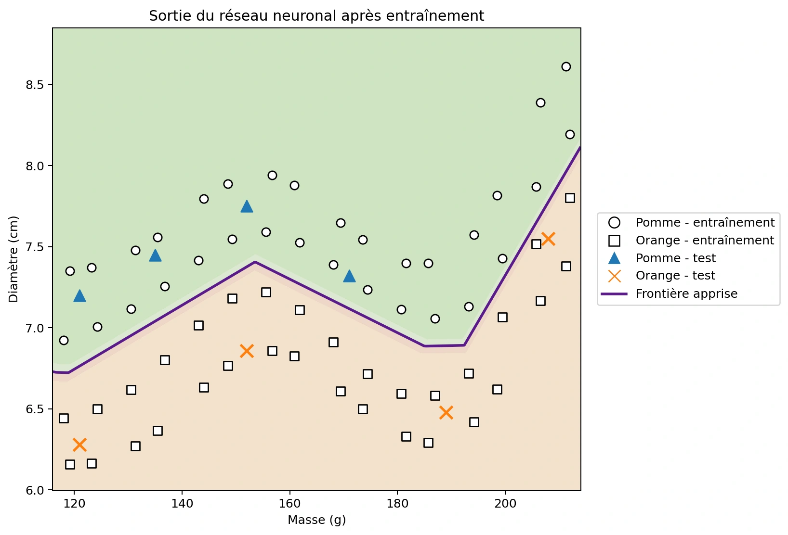

Quand un ordinateur peut-il apprendre?
Dans la vie quotidienne, nous prenons des décisions de classification presque sans nous en rendre compte. En observant un fruit, nous l’identifions rapidement comme une pomme ou une orange; lorsqu’un message arrive sur le téléphone, nous distinguons une conversation légitime d’une publicité indésirable; dans une analyse médicale, plusieurs mesures peuvent être combinées pour appuyer une décision; et, dans les établissements financiers, de nombreuses données sont évaluées avant l’octroi d’un crédit. Dans tous ces exemples, plusieurs caractéristiques sont considérées conjointement afin de produire une réponse.
Dans de nombreux programmes informatiques traditionnels, les règles qui produisent cette réponse sont écrites explicitement par le programmeur. Cette approche fonctionne bien lorsque les règles sont connues et peuvent être formulées clairement. Elle devient moins efficace lorsque les données sont très variables ou lorsqu’il est difficile d’établir à l’avance toutes les conditions nécessaires à une bonne décision. Cela conduit à une question naturelle:
Peut-on construire un programme qui apprenne une règle de
décision à partir
d’exemples, au lieu de recevoir cette règle à l’avance?
Il s’agit de l’une des idées centrales de l’apprentissage automatique, un domaine de l’intelligence artificielle consacré aux méthodes qui ajustent des modèles à partir de données . Dans un problème d’apprentissage supervisé, l’algorithme reçoit des exemples accompagnés de leurs réponses correctes, et nous cherchons un modèle capable de produire des prédictions utiles également pour des cas qui n’ont pas été utilisés pendant l’entraînement. Parmi les nombreux modèles développés à cette fin, les réseaux neuronaux artificiels ont acquis une grande importance dans des applications telles que la reconnaissance d’images, le traitement du langage, l’analyse de signaux et la prévision de séries temporelles .
L’utilisation des réseaux neuronaux comme passerelle entre les mathématiques, l’informatique et l’enseignement scolaire a déjà été discutée dans Professor de Matemática Online par Batista et Martins , qui présentent une activité faisant intervenir la formation des enseignants, Python et la reconnaissance de chiffres. Le présent article suit une voie complémentaire. Notre objectif principal est d’exposer les mathématiques internes d’un petit réseau neuronal, en partant de la géométrie analytique et en progressant pas à pas jusqu’au calcul des gradients et à une implémentation manuelle de la rétropropagation.
Malgré la sophistication des applications modernes, le cœur mathématique d’un réseau neuronal peut être introduit à l’aide d’idées relativement familières. À un niveau élémentaire, un réseau neuronal est une composition de fonctions dont les paramètres sont ajustés à partir de données. Nous commençons par un problème géométrique simple, réinterprétons une droite séparatrice comme un neurone artificiel, connectons plusieurs neurones, étudions le rôle des fonctions d’activation et montrons comment les dérivées peuvent être utilisées pour ajuster automatiquement les paramètres du réseau. Enfin, nous implémentons en Python un exemple petit mais complet, en maintenant une correspondance directe entre les équations et le code.
Représentation mathématique du problème
Pour comprendre le fonctionnement d’un réseau neuronal, nous commençons par un problème volontairement simple: distinguer des pommes des oranges. Un fruit possède de nombreuses caractéristiques qui pourraient être utiles pour cette tâche, telles que la couleur, la masse, le diamètre, la texture et l’arôme. Cependant, un premier modèle mathématique n’a pas besoin d’inclure toute cette complexité. Nous n’utiliserons que deux grandeurs faciles à mesurer: la masse, en grammes, et le diamètre, en centimètres.
Ainsi, chaque fruit sera représenté par un couple ordonné \[(x_1,x_2),\] où \[x_1=\text{masse} \qquad\text{y}\qquad x_2=\text{diamètre}.\]
Ainsi, le couple \((155,\;7.2)\) représente un fruit de masse \(155\) g et de diamètre \(7.2\) cm. En remplaçant l’objet physique par deux mesures numériques, nous associons chaque fruit à un point du plan cartésien: la première coordonnée indique sa masse et la seconde son diamètre. La Figure 1 illustre cette représentation pour un ensemble hypothétique de pommes et d’oranges.

Cette transformation modifie la nature apparente du problème. Au lieu de demander directement comment reconnaître une pomme ou une orange, nous pouvons formuler une question géométrique: comment séparer dans le plan les points appartenant aux deux classes? Ce changement de perspective est fondamental en apprentissage automatique. Les images, les textes, les sons et les signaux expérimentaux doivent être convertis en représentations numériques avant de pouvoir être traités par un algorithme. Dans notre exemple, chaque objet ne possède que deux coordonnées; dans les applications réelles, une représentation peut contenir des centaines, des milliers, voire des millions de composantes. Le principe reste le même: chaque exemple est associé à une collection de nombres, et le modèle cherche une règle qui transforme cette représentation en la réponse souhaitée.
Nous commençons par la règle géométrique la plus simple disponible et demandons si une seule droite peut séparer correctement les points correspondant aux pommes de ceux correspondant aux oranges.
Une droite comme classifieur
Une fois chaque fruit représenté par un point du plan cartésien, la classification devient un problème géométrique: une droite peut-elle séparer les pommes des oranges? Cette question exprime l’idée fondamentale d’une importante famille de méthodes d’apprentissage automatique appelées classifieurs linéaires.
Considérons une droite qui traverse le nuage de données, comme l’illustre la Figure 2. La droite divise le plan en deux demi-plans. Si la plupart des points correspondant aux pommes se trouvent d’un côté et la plupart des points correspondant aux oranges de l’autre, la position d’un nouveau fruit par rapport à la droite peut servir de règle de classification. Après avoir mesuré sa masse et son diamètre, nous représentons le fruit par un point et déterminons de quel côté de la droite ce point se situe.

Dans le plan cartésien \((x_1,x_2)\), une droite peut être décrite par \[w_1x_1+w_2x_2+b=0, \qquad (w_1,w_2)\neq(0,0).\]
Le vecteur \((w_1,w_2)\) est perpendiculaire à la droite et détermine donc son orientation, tandis que le paramètre \(b\) contribue à déterminer sa position. Cette représentation présente une petite redondance: multiplier \(w_1\), \(w_2\) et \(b\) par une même constante non nulle produit exactement la même droite. Par conséquent, les paramètres qui décrivent la frontière ne sont pas uniques. Leur interprétation numérique dépend également de l’échelle des variables. Comme la masse est mesurée en grammes et le diamètre en centimètres, les valeurs numériques de \(w_1\) et \(w_2\) ne doivent pas être comparées sans tenir compte des différentes unités.
L’équation même de la droite fournit une manière simple de déterminer de quel côté de la frontière se trouve un point. Nous définissons le score \[s(x_1,x_2)=w_1x_1+w_2x_2+b.\]
Si \(s(x_1,x_2)=0\), le point est sur la droite. Si \(s(x_1,x_2)>0\), il se trouve dans un demi-plan; si \(s(x_1,x_2)<0\), il se trouve dans l’autre. Si nous décidons que les scores positifs correspondent aux pommes et les scores négatifs aux oranges, la règle devient \[\begin{cases} s(x_1,x_2)\geq 0 & \Longrightarrow \text{pomme},\\ s(x_1,x_2)<0 & \Longrightarrow \text{orange}. \end{cases}\]
Par exemple, considérons la frontière définie par \[w_1=\frac{1}{10}, \qquad w_2=2, \qquad b=-30.\] Pour un fruit de masse \(160\) g et de diamètre \(7.8\) cm, \[\begin{aligned} s &=\frac{1}{10}\times160+2\times7.8-30\\ &=16+15.6-30\\ &=1.6. \end{aligned}\] Comme le score est positif, le point se trouve dans le demi-plan que nous associons aux pommes. Ce classifieur étiquetterait donc le fruit comme une pomme.
Tout choix de \(w_1\), \(w_2\) et \(b\) ne produit pas une bonne classification. Certaines droites séparent mal les deux groupes, tandis que d’autres commettent moins d’erreurs. Le problème d’apprentissage consiste précisément à utiliser des exemples préalablement étiquetés pour déterminer des valeurs des paramètres qui réduisent une mesure de l’erreur du modèle. Au lieu de programmer directement la position de la droite, nous voulons que l’algorithme ajuste ses coefficients à partir des données.
Une seule droite peut bien fonctionner lorsque les classes sont approximativement linéairement séparables. Des jeux de données plus complexes peuvent nécessiter une frontière non linéaire. Avant d’aborder cette limitation, nous réinterprétons le classifieur que nous venons de construire comme une unité de calcul élémentaire: un neurone artificiel.
Le neurone artificiel
Dans la section précédente, l’expression \[s=w_1x_1+w_2x_2+b\] a été utilisée pour déterminer de quel côté d’une droite se trouve un fruit. La même expression peut être considérée comme la première étape du calcul réalisé par un neurone artificiel. Un neurone reçoit des entrées numériques, les combine à l’aide de poids et d’un biais, puis applique une fonction mathématique pour obtenir sa sortie.
Dans notre exemple, les entrées sont la masse \(x_1\) et le diamètre \(x_2\). Chaque entrée est multipliée par un paramètre appelé poids; les produits sont additionnés avec un terme constant \(b\), appelé biais. La Figure 3 présente schématiquement ce calcul.

Les poids déterminent la manière dont les variations des entrées affectent le score. Si \(x_2\) et toutes les autres quantités restent fixes, une variation \(\Delta x_1\) modifie \(s\) de \(w_1\Delta x_1\). De manière analogue, une variation \(\Delta x_2\) modifie le score de \(w_2\Delta x_2\). Le signe est également important: un poids positif fait qu’une augmentation de l’entrée augmente le score, tandis qu’un poids négatif produit l’effet inverse. Cette interprétation doit être utilisée avec prudence lorsque les variables ont des unités et des échelles différentes. Pour cette raison, les implémentations pratiques normalisent ou standardisent souvent les données d’entrée avant l’entraînement.
Le biais \(b\) est le terme constant de la transformation affine. Géométriquement, il permet de déplacer la frontière de décision. Si \(b=0\), l’équation \[w_1x_1+w_2x_2=0\] oblige la droite à passer par l’origine. Avec un biais, la frontière peut être déplacée vers d’autres positions. De manière équivalente, lorsque \(x_1=x_2=0\), le score vaut simplement \(s=b\).
Le score n’est pas nécessairement la sortie finale du neurone. En général, on lui applique une fonction d’activation \(g\): \[\widehat{y}=g(s)=g\left(w_1x_1+w_2x_2+b\right).\] Le calcul comporte donc deux étapes, \[\begin{aligned} s &= w_1x_1+w_2x_2+b,\\[4pt] \widehat{y} &= g(s). \end{aligned}\]
En utilisant les valeurs des paramètres de la section précédente, nous obtenons \(s=1.6\). Si nous choisissons la fonction échelon \[g(s)= \begin{cases} 1, & s\geq0,\\ 0, & s<0, \end{cases}\] alors \(\widehat{y}=g(1.6)=1\). Selon notre convention, le fruit est classé comme une pomme. Avec cette activation, la décision change lorsque \(s\) franchit zéro; la frontière entre les classes est donc exactement \[w_1x_1+w_2x_2+b=0.\]
Un neurone unique est donc un objet mathématique simple doté de paramètres ajustables. Sa véritable importance apparaît lorsque de nombreuses unités de ce type sont connectées. Toutefois, avant de construire un réseau, nous devons comprendre pourquoi la fonction d’activation est essentielle.
Pourquoi avons-nous besoin d’une fonction d’activation?
Un neurone calcule d’abord un score au moyen d’une transformation affine, puis applique une fonction d’activation. Cette seconde étape est essentielle pour qu’un réseau neuronal puisse représenter des relations complexes. Pour comprendre pourquoi, imaginons un réseau dans lequel aucune fonction d’activation n’est utilisée. Chaque unité aurait alors la forme \[y=w_1x_1+w_2x_2+b.\]
Pour une illustration unidimensionnelle, supposons qu’une première unité produise \[h=ax+b\] et qu’une seconde calcule \[y=ch+d.\] La substitution donne \[y=c(ax+b)+d=acx+(cb+d),\] qui reste une fonction affine de \(x\). La même affirmation reste vraie en plusieurs dimensions: une composition de transformations affines demeure affine. Ainsi, ajouter de nombreuses couches sans opération non linéaire ne rend pas le réseau fondamentalement plus expressif; toute la composition pourrait être remplacée par une seule transformation affine.
Une fonction d’activation rompt cette limitation. Après avoir calculé le score \(s\), le neurone applique une fonction, généralement non linéaire, \[h=g(s).\] Lorsque plusieurs unités de ce type sont connectées, la composition résultante ne peut plus être réduite à une seule transformation affine. Cela permet au réseau de construire des frontières de décision plus complexes.
L’activation la plus simple est la fonction échelon, \[g(s)= \begin{cases} 1, & s\geq0,\\ 0, & s<0. \end{cases}\] Elle produit une décision binaire et est très utile pour comprendre la classification. Cependant, sa dérivée est nulle pour \(s\neq0\) et n’est pas définie en \(s=0\). Comme l’entraînement fondé sur les gradients utilise les dérivées pour déterminer comment les paramètres doivent changer, la fonction échelon n’est pas adaptée à ce mécanisme d’entraînement.
Une alternative est la fonction sigmoïde, \[\sigma(s)=\frac{1}{1+e^{-s}}.\] Elle transforme tout nombre réel en une valeur strictement comprise entre \(0\) et \(1\). Pour des valeurs très négatives de \(s\), la sortie se rapproche de \(0\); pour des valeurs très positives, elle se rapproche de \(1\); entre les deux extrêmes, la transition est progressive. La sigmoïde est dérivable en tout point et \[\sigma'(s)=\sigma(s)\bigl(1-\sigma(s)\bigr).\] Comme ses sorties se situent entre \(0\) et \(1\), elle est fréquemment utilisée dans la couche de sortie d’un classifieur binaire. Dans une formulation probabiliste et avec une fonction de perte appropriée, la sortie peut être interprétée comme une estimation de la probabilité de la classe représentée par \(1\). Cependant, dans les couches cachées, la sigmoïde peut poser une difficulté: pour des entrées de grande amplitude, sa dérivée devient très faible, ce qui contribue au problème du gradient qui s’évanouit dans les réseaux profonds.
Une activation très utilisée dans les couches cachées est ReLU (Rectified Linear Unit), \[\operatorname{ReLU}(s)=\max(0,s) = \begin{cases} 0, & s<0,\\ s, & s\geq0. \end{cases}\] Bien qu’elle soit composée de deux morceaux linéaires, ReLU n’est pas globalement linéaire. Sa dérivée vaut \(0\) pour \(s<0\) et \(1\) pour \(s>0\). En \(s=0\), la dérivée usuelle n’existe pas, et les implémentations logicielles adoptent une convention pour le gradient. Pour les entrées positives, la dérivée ne diminue pas lorsque \(s\) augmente, ce qui évite l’un des mécanismes de saturation de la sigmoïde.
La Figure 4 compare visuellement ces trois activations: le saut abrupt de la fonction échelon, la transition progressive de la sigmoïde et le changement de pente de ReLU.

Leurs principales propriétés sont résumées ci-dessous.
| Fonction | Sortie | Dérivée | Usage typique |
|---|---|---|---|
| Échelon | \(\{0,1\}\) | Nulle pour \(s\neq0\); non définie en \(s=0\) | Modèles historiques et exemples pédagogiques |
| Sigmoïde | \((0,1)\) | Existe pour tout \(s\) | Couche de sortie en classification binaire |
| ReLU | \([0,\infty)\) | \(0\) pour \(s<0\) et \(1\) pour \(s>0\) | Couches cachées |
Les détails de ces fonctions diffèrent, mais leur rôle conceptuel commun consiste à introduire de la non-linéarité. C’est cette non-linéarité qui permet au petit réseau de la section suivante de représenter des relations qu’une seule droite ne peut pas capturer.
Pour les lecteurs qui souhaitent approfondir le sujet, Haykin propose un traitement classique des réseaux neuronaux, tandis que Goodfellow, Bengio et Courville analysent les fonctions d’activation et l’entraînement des réseaux profonds dans un contexte plus large. Le texte de Nielsen, disponible gratuitement , est particulièrement accessible pour développer une intuition sur les neurones, les activations et l’apprentissage.
Construction d’un petit réseau neuronal
Considérons maintenant un réseau avec deux entrées, une couche cachée contenant trois neurones et un neurone de sortie. Les entrées restent \[x_1=\text{masse}, \qquad x_2=\text{diamètre},\] et toutes deux sont fournies à chaque neurone caché, comme le montre la Figure 5.

Soient \(h_1\), \(h_2\) et \(h_3\) les sorties de la couche cachée. Chaque neurone reçoit les mêmes deux entrées, mais possède ses propres poids et son propre biais: \[\begin{aligned} h_1&=g\left(w_{11}x_1+w_{12}x_2+b_1\right),\\[4pt] h_2&=g\left(w_{21}x_1+w_{22}x_2+b_2\right),\\[4pt] h_3&=g\left(w_{31}x_1+w_{32}x_2+b_3\right). \end{aligned}\]
Bien que les trois neurones reçoivent la même masse et le même diamètre, ils peuvent produire des réponses différentes parce que leurs paramètres sont distincts. Pendant l’entraînement, ces paramètres sont ajustés afin que les activations intermédiaires deviennent utiles à la classification.
Les trois quantités \(h_1\), \(h_2\) et \(h_3\) sont ensuite envoyées au neurone de sortie, qui calcule \[s_{\mathrm{out}}=v_1h_1+v_2h_2+v_3h_3+c\] et produit \[\widehat{y}=g_{\mathrm{out}}\left(s_{\mathrm{out}}\right).\] Pour notre problème binaire, nous utilisons une sortie sigmoïde: \[\widehat{y}=\sigma\left(v_1h_1+v_2h_2+v_3h_3+c\right), \qquad 0<\widehat{y}<1.\]
En utilisant \(y=1\) pour une pomme et \(y=0\) pour une orange, un seuil de \(0.5\) fournit la décision de classe \[\widehat{y}\geq0.5 \Longrightarrow \text{pomme}, \qquad \widehat{y}<0.5 \Longrightarrow \text{orange}.\] Ainsi, les valeurs proches de \(1\) sont fortement associées aux pommes, tandis que les valeurs proches de \(0\) sont associées aux oranges. Comme indiqué précédemment, interpréter numériquement \(\widehat{y}\) comme une probabilité exige des hypothèses supplémentaires sur le modèle et son entraînement. Pour la règle de classification utilisée ici, il suffit de considérer \(\widehat{y}\) comme une sortie continue du réseau.
La caractéristique centrale de cette architecture est la représentation intermédiaire \[(x_1,x_2) \longrightarrow (h_1,h_2,h_3) \longrightarrow \widehat{y}.\] Le réseau reçoit deux caractéristiques et construit trois nouvelles quantités avant de produire la réponse finale. Ces activations ne sont pas choisies manuellement: elles dépendent des poids et des biais et évoluent donc à mesure que les paramètres sont entraînés.
Malgré sa petite taille, le réseau possède déjà treize paramètres ajustables. Les trois neurones cachés contiennent \[3(2+1)=9\] paramètres, et le neurone de sortie en apporte \[3+1=4.\] Ainsi, \[9+4=13.\]
Le même comptage apparaît clairement en notation matricielle. Définissons \[\mathbf{x}= \begin{bmatrix} x_1\\x_2 \end{bmatrix}, \qquad W^{(1)}= \begin{bmatrix} w_{11}&w_{12}\\ w_{21}&w_{22}\\ w_{31}&w_{32} \end{bmatrix}, \qquad \mathbf{b}^{(1)}= \begin{bmatrix} b_1\\b_2\\b_3 \end{bmatrix}.\] La couche cachée peut alors s’écrire de manière compacte sous la forme \[\mathbf{h}=g\left(W^{(1)}\mathbf{x}+\mathbf{b}^{(1)}\right),\] où \(g\) agit composante par composante. Pour la sortie, \[\widehat{y} = \sigma\left(W^{(2)}\mathbf{h}+b^{(2)}\right),\] con \[W^{(2)}= \begin{bmatrix} v_1&v_2&v_3 \end{bmatrix}.\]
Cette notation annonce la structure qui apparaîtra dans le programme Python. Lorsque nous présentons un fruit à l’entrée et calculons les activations successives jusqu’à obtenir \(\widehat{y}\), nous effectuons une propagation directe ou un passage avant. La question centrale demeure: comment les treize paramètres peuvent-ils être déterminés automatiquement afin que les prédictions s’ajustent aux données?
Comment un réseau neuronal apprend-il ?
Les poids et les biais d’un réseau ne sont pas connus à l’avance : ils sont ajustés à partir d’exemples dont les étiquettes de classe sont connues. L’apprentissage consiste à répéter la propagation avant, le calcul de la perte, la détermination des gradients et la mise à jour des paramètres (Figure 6). La règle de la chaîne permet de quantifier la sensibilité de la perte à chaque poids et biais.
Pour ajuster les paramètres, il faut d’abord mesurer numériquement l’écart entre la prédiction et la réponse attendue. Une fonction de perte associe une pénalité à chaque prédiction et permet de comparer plusieurs choix de poids et de biais. Contrairement au simple décompte des erreurs de classification, une perte continue distingue les prédictions plus ou moins proches de l’étiquette et possède des dérivées utilisables pour guider l’entraînement.
Considérons un fruit de masse \(140\) g et de diamètre \(7.0\) cm, identifié comme une orange (\(y=0\)). En notant \(\widehat y\in(0,1)\) la sortie du réseau, nous employons la perte quadratique pour une observation :
\[\label{eq:perda} E=\frac12(\widehat y-y)^2.\]
Ici, \(y\) est la classe véritable et \(\widehat y\) la prédiction. La perte est positive ou nulle et tend vers zéro lorsque la prédiction approche l’étiquette ; un écart \(|\widehat y-y|\) plus important engendre une pénalité plus forte. Pour une orange, les prédictions \(0.80\) et \(0.60\) donnent respectivement \(E=0.32\) et \(E=0.18\). Toutes deux classent à tort le fruit comme une pomme au seuil \(0.5\), mais la perte distingue celle qui se rapproche davantage de la bonne valeur. Le facteur \(1/2\) ne change pas le minimum et simplifie la dérivation.
Le réseau doit apprendre à partir de plusieurs exemples et non d’un seul fruit. Pour \(N\) observations, nous définissons la perte moyenne
\[\label{eq:perda_media} J=\frac1N\sum_{i=1}^{N}E_i.\]
Cette moyenne résume l’ajustement sur l’ensemble d’entraînement : c’est elle que nous cherchons à diminuer en modifiant les paramètres. Minimiser \(J\) ne garantit pas, à lui seul, de bonnes prédictions sur de nouvelles observations ; nous reviendrons sur la généralisation. Nous retenons la perte quadratique de l’équation perda pour sa simplicité algébrique, puis nous comparons son gradient à celui de l’entropie croisée binaire sans changer l’expérience numérique [2, 3].

Si \(\theta\) désigne un poids ou un biais, la dérivée \(\partial J/\partial\theta\) mesure la sensibilité locale de la perte moyenne à ce paramètre. Un pas de descente de gradient s’écrit
\[\label{eq:descida} \theta_{\mathrm{new}}=\theta_{\mathrm{old}}-\eta\frac{\partial J}{\partial\theta},\qquad \eta>0.\]
Le taux d’apprentissage \(\eta\) détermine la taille du pas : des valeurs très petites peuvent ralentir la convergence, tandis que des valeurs trop grandes peuvent produire des oscillations ou une divergence. Lorsque les paramètres sont mis à jour après chaque observation, comme dans le code de la Section 8, \(\partial J/\partial\theta\) est remplacé par \(\partial E_i/\partial\theta\). Il s’agit de la forme de descente stochastique de gradient (SGD) utilisée ici.
La règle de la chaîne dans le réseau 2–3–1
Nous utilisons le réseau de la Figure [fig:pequena_rede], avec trois neurones cachés ReLU et une sortie sigmoïde. Les entrées représentant une masse (en grammes) et un diamètre (en centimètres), elles n’ont pas la même échelle numérique. Pour éviter une dégradation du conditionnement de l’ajustement, chaque caractéristique est transformée selon \(x_j^{\ast}=(x_j-\mu_j)/\sigma_j\), où \(\mu_j\) et \(\sigma_j>0\) sont la moyenne et l’écart type de référence. Nous obtenons des entrées sans dimension, d’échelles comparables, qui facilitent le choix du pas d’optimisation. Dans l’expérience informatique, ces statistiques sont calculées exclusivement sur les données d’entraînement pour éviter toute fuite d’information depuis les données de test. Dans l’exemple numérique suivant, les centres et échelles sont fixés uniquement pour simplifier les calculs.
Pour une entrée standardisée \(\mathbf{x}^{\ast}=(x_1^{\ast},x_2^{\ast})^{\mathsf T}\), la propagation avant est
\[\label{eq:forward} \begin{aligned} \mathbf{z}^{(1)}&=W^{(1)}\mathbf{x}^{\ast}+\mathbf{b}^{(1)}, &\mathbf{h}&=\operatorname{ReLU}(\mathbf{z}^{(1)}),\\ z^{(2)}&=W^{(2)}\mathbf{h}+c, &\widehat y&=\sigma(z^{(2)}). \end{aligned}\]
Ici, \(c=b^{(2)}\) est le biais de sortie et \(W^{(2)}=(v_1,v_2,v_3)\). La rétropropagation commence au neurone de sortie en appliquant successivement la règle de la chaîne :
\[\label{eq:delta_saida} \begin{aligned} \delta^{(2)}:=\frac{\partial E}{\partial z^{(2)}} &=\underbrace{\frac{\partial E}{\partial\widehat y}}_{\widehat y-y} \underbrace{\frac{\partial\widehat y}{\partial z^{(2)}}}_{\widehat y(1-\widehat y)} =(\widehat y-y)\widehat y(1-\widehat y),\\ \frac{\partial E}{\partial v_j}&=\delta^{(2)}h_j, \qquad \frac{\partial E}{\partial c}=\delta^{(2)}. \end{aligned}\]
Chaque activation \(h_j\) dépendant également des poids et du biais de son neurone, nous calculons les sensibilités des neurones cachés :
\[\label{eq:delta_oculta} \begin{aligned} \delta_j^{(1)}:=\frac{\partial E}{\partial z_j^{(1)}} &=\delta^{(2)}v_j\,\operatorname{ReLU}'(z_j^{(1)}),\\ \frac{\partial E}{\partial w_{jk}} &=\delta_j^{(1)}x_k^{\ast},\qquad \frac{\partial E}{\partial b_j}=\delta_j^{(1)}. \end{aligned}\]
La fonction ReLU n’est pas différentiable en zéro ; si nécessaire, nous adoptons la convention numérique \(\operatorname{ReLU}'(0)=0\). Les quantités \(\delta^{(2)}\) et \(\delta_j^{(1)}\) sont des sensibilités locales de la perte, et non des « erreurs physiques » qui circuleraient dans le réseau. Leur réutilisation permet de calculer les treize gradients sans reprendre toute la différentiation pour chaque poids.
Une mise à jour numérique complète des paramètres
Pour rendre les calculs lisibles, uniquement dans cet exemple, nous fixons les centres et les échelles à \(160\) g et \(20\) g pour la masse, puis à \(7.5\) cm et \(0.5\) cm pour le diamètre. Le fruit \((140\,\mathrm{g},7.0\,\mathrm{cm})\) correspond donc à l’entrée sans dimension
\[\label{eq:exemplo_entrada} \mathbf{x}^{\ast}=\begin{bmatrix}(140-160)/20\\(7.0-7.5)/0.5\end{bmatrix} =\begin{bmatrix}-1\\-1\end{bmatrix}.\]
Ces valeurs de référence sont fixées pour la démonstration ; dans la Section 8, moyenne et écart type seront calculés directement à partir des données d’entraînement.
Choisissons les treize paramètres initiaux
\[\label{eq:param_iniciais} W^{(1)}=\begin{bmatrix} 0.2&0.1\\-0.3&0.2\\0.1&-0.4 \end{bmatrix},\quad \mathbf{b}^{(1)}=\begin{bmatrix}\phantom{-}0.5\\\phantom{-}0.2\\-0.5\end{bmatrix},\quad W^{(2)}=\begin{bmatrix}\phantom{-}0.5&-0.4&\phantom{-}0.3\end{bmatrix},\quad c=1.\]
L’équation forward donne successivement
\[\label{eq:exemplo_forward} \begin{gathered} \mathbf{z}^{(1)}=(0.2,\;0.3,\;-0.2)^{\mathsf T},\qquad \mathbf{h}=(0.2,\;0.3,\;0)^{\mathsf T},\\ z^{(2)}=0.5(0.2)-0.4(0.3)+1=0.98,\\ \widehat y=\sigma(0.98)\simeq0.727108,\qquad E\simeq0.264343. \end{gathered}\]
La prédiction initiale correspond à la mauvaise classe. D’après les équations delta_saida et delta_oculta,
\[\label{eq:exemplo_gradientes} \begin{gathered} \delta^{(2)}\simeq0.144274,\qquad \boldsymbol{\delta}^{(1)}\simeq(0.072137,\;-0.057710,\;0)^{\mathsf T},\\ \frac{\partial E}{\partial W^{(2)}}\simeq (0.028855,\;0.043282,\;0),\qquad \frac{\partial E}{\partial W^{(1)}}\simeq \begin{bmatrix}-0.072137&-0.072137\\\phantom{-}0.057710&\phantom{-}0.057710\\\phantom{-}0&\phantom{-}0\end{bmatrix}. \end{gathered}\]
Le troisième neurone caché est inactif (\(z_3^{(1)}<0\)) ; les gradients de ses poids d’entrée et de son biais sont donc nuls à ce pas. Avec \(\eta=0.05\), nous appliquons \(\theta_{\mathrm{new}}=\theta_{\mathrm{old}}-0.05\,\partial E/\partial\theta\) simultanément à tous les paramètres. Le Tableau 1 présente quelques-unes des treize mises à jour ; les autres suivent les mêmes formules.
| Paramètre \(\theta\) | Initial | \(\partial E/\partial\theta\) | Mis à jour |
|---|---|---|---|
| \(v_1\) | \(0.500000\) | \(0.028855\) | \(0.498557\) |
| \(v_2\) | \(-0.400000\) | \(0.043282\) | \(-0.402164\) |
| \(c\) | \(1.000000\) | \(0.144274\) | \(0.992786\) |
| \(w_{11}\) | \(0.200000\) | \(-0.072137\) | \(0.203607\) |
| \(w_{21}\) | \(-0.300000\) | \(0.057710\) | \(-0.302885\) |
| \(b_1\) | \(0.500000\) | \(0.072137\) | \(0.496393\) |
| \(w_{31}\) | \(0.100000\) | \(0\) | \(0.100000\) |
Une nouvelle propagation avant utilisant tous les paramètres mis à jour donne \(\widehat y_{\mathrm{new}}\simeq0.723717\) et \(E_{\mathrm{new}}\simeq0.261883\) : la perte a diminué après un seul pas. La classe prédite n’a pas encore changé, ce qui est attendu ; l’apprentissage exige de répéter ce processus avec de nombreux exemples et époques.
Erreur quadratique et entropie croisée
L’erreur quadratique permet d’expliciter la règle de la chaîne, mais la classification binaire à sortie sigmoïde utilise aussi fréquemment l’entropie croisée binaire. Pour \(y\in\{0,1\}\) et \(\widehat y=\sigma(z)\), la perte d’une observation est
\[\label{eq:entropia_cruzada} E_{\mathrm{CE}}=-y\ln\widehat y-(1-y)\ln(1-\widehat y).\]
Alors que l’erreur quadratique pénalise l’écart numérique entre prédiction et étiquette, l’entropie croisée pénalise les prédictions attribuant une faible probabilité à la classe observée, en interprétant \(\widehat y\) comme la probabilité de la classe \(1\). La principale différence pour l’entraînement apparaît en dérivant par rapport au score \(z\) du neurone de sortie. Avec la règle de la chaîne et \(\sigma'(z)=\widehat y(1-\widehat y)\), nous obtenons
\[\label{eq:derivada_entropia_cruzada} \begin{aligned} \frac{\partial E_{\mathrm{CE}}}{\partial z} &=\left(-\frac{y}{\widehat y}+\frac{1-y}{1-\widehat y}\right) \widehat y(1-\widehat y) =\widehat y-y,\\ \frac{\partial E_{\mathrm{SE}}}{\partial z} &=(\widehat y-y)\widehat y(1-\widehat y), \qquad E_{\mathrm{SE}}=\tfrac12(\widehat y-y)^2. \end{aligned}\]
Pour illustrer cette différence seulement, supposons une prédiction \(\widehat y=0.80\) pour une orange (\(y=0\)). Alors \(E_{\mathrm{SE}}=0.32\) et \(E_{\mathrm{CE}}=-\ln(0.20)\simeq1.60944\), tandis que les dérivées correspondantes par rapport à \(z\) sont \(0.128\) et \(0.80\). Pour \(\eta=0.05\), la variation isolée du biais de sortie, dont le gradient vérifie \(\partial E/\partial c=\partial E/\partial z\), serait \(\Delta c=-0.0064\) avec l’erreur quadratique et \(\Delta c=-0.0400\) avec l’entropie croisée. Cette prédiction illustrative \(0.80\) ne remplace pas les valeurs du calcul numérique complet précédent.
Avec l’entropie croisée, le facteur \(\widehat y(1-\widehat y)\) ne multiplie plus la sensibilité de la couche de sortie. Cela évite, dans cette couche, l’atténuation supplémentaire du gradient due à la saturation de la sigmoïde lorsqu’une prédiction est très erronée. Cela n’élimine ni les petits gradients dans les autres couches ni ne garantit un entraînement plus rapide dans toutes les situations. Les deux pertes ayant des échelles différentes, leurs valeurs ne doivent pas être directement comparées comme mesures de qualité. Le code principal conserve l’erreur quadratique pour reproduire intégralement la mise à jour précédente ; le notebook supplémentaire présente la comparaison sans modifier l’entraînement.
Époques et généralisation
Un passage complet sur les observations d’entraînement est appelé une époque. Dans la section suivante, le programme mélange les exemples à chaque époque et met à jour les paramètres après chaque fruit. L’architecture reste fixe, mais les poids, les biais et la frontière de décision changent. Réduire la perte sur les données d’entraînement ne garantit pas de bonnes prédictions sur de nouveaux exemples. Cette capacité est appelée généralisation ; lorsqu’un ajustement excessif aux données d’entraînement dégrade les prédictions sur des données inédites, on parle de surapprentissage. Des ensembles distincts d’entraînement, de validation et de test permettent, dans des études plus larges, de choisir les hyperparamètres et d’évaluer le modèle avec moins de biais [2, 3].
Des mathématiques à Python
Nous implémentons maintenant, avec NumPy seulement, la
propagation avant, la règle de la chaîne et les mises à jour
stochastiques établies dans la Section 7 [4]. Pour obtenir une
frontière de décision non linéaire, nous faisons passer la couche cachée
de trois à douze neurones ReLU. Le réseau \(2\)–\(12\)–\(1\)
contient \(12(2+1)+(12+1)=49\)
paramètres, mais suit exactement les mêmes équations.
Données synthétiques pour une démonstration
L’expérience utilise \(64\) exemples synthétiques d’entraînement répartis en quatre bandes de \(16\) points dans le plan masse–diamètre, ainsi que huit observations supplémentaires destinées à un test purement illustratif. Deux bandes de pommes se trouvent au-dessus d’une courbe de référence et deux bandes d’oranges au-dessous. De faibles décalages déterministes évitent des bandes parfaitement régulières. Les valeurs ont été choisies seulement pour produire une distribution visuellement plausible et une frontière de décision non linéaire ; il ne s’agit ni de mesures expérimentales ni d’un modèle physique des fruits.
La courbe de référence sert exclusivement à générer les exemples. Elle n’est pas fournie au réseau, ne figure pas dans la perte et n’intervient pas dans la rétropropagation. L’entraînement n’utilise que les paires masse–diamètre et leurs étiquettes de classe. La formule génératrice et les décalages sont documentés dans l’Annexe A, permettant de reproduire exactement les données de la Figure 7.

La Figure 7 montre les points produits
par construct_data() ; la courbe en tirets appartient
seulement à la construction synthétique et ne représente pas une
frontière apprise. Les huit exemples supplémentaires servent uniquement
à l’illustration finale et ne participent pas au calcul des statistiques
de standardisation.
Standardisation et choix d’entraînement
La masse et le diamètre ayant des unités et des échelles différentes, chaque entrée est transformée en une variable sans dimension :
\[\label{eq:padronizacao} x_j^{\ast}=\frac{x_j-\mu_j}{\sigma_j},\quad \mu_j=\frac1N\sum_{i=1}^N x_{ij},\quad \sigma_j=\sqrt{\frac1N\sum_{i=1}^N(x_{ij}-\mu_j)^2}.\]
La moyenne \(\mu_j\) centre la caractéristique \(j\) et l’écart type \(\sigma_j\) change son échelle ; ici \(N=64\). Ces statistiques sont calculées uniquement sur les données d’entraînement, puis appliquées sans modification aux données de test. La procédure suppose \(\sigma_j>0\). La même transformation est utilisée pour les entrées du réseau et la grille de prédiction.
Nous initialisons les poids selon une loi normale centrée d’écart
type \(0.1\), avec la graine aléatoire
\(42\). Les petits poids rompent la
symétrie entre neurones cachés ; la loi normale est un choix simple, non
une prescription universelle. Pour des réseaux plus grands, l’échelle
d’initialisation doit tenir compte de l’architecture et des fonctions
d’activation. Les biais sont initialement nuls. En \(s=0\), ReLU n’a pas de dérivée ; la
fonction relu_derivative() adopte zéro par convention, sans
modifier la définition mathématique ni garantir à elle seule la
convergence.
Nous utilisons \(\eta=0.05\) comme valeur prudente et non comme taux optimal. Une analyse élémentaire de sensibilité avec graine et données fixées conduit au Tableau 2 après \(1000\) époques. Le taux le plus élevé testé converge plus vite sur cet ensemble, mais cela ne démontre pas qu’il convient en général. Nous conservons \(0.05\) pour son entraînement stable et une évolution de la perte facile à examiner.
| \(\eta\) | Perte moyenne \(J\) | Corrects sur \(64\) |
|---|---|---|
| \(0.005\) | \(0.041871\) | \(55\) |
| \(0.05\) | \(0.006485\) | \(64\) |
| \(0.2\) | \(0.000106\) | \(64\) |
Implémentation intégrale en Python
Le programme complet est présenté dans les Codes 1–10, rangés par fonction
et dans l’ordre d’exécution. Les dix blocs successifs constituent le
fichier neural_network.py, également fourni comme matériel
supplémentaire.
01 — Préparation de l’environnement
"""Exemple pédagogique : classification de fruits par un réseau 2-12-1.
Dépendances : numpy et matplotlib. Exécution : python neural_network.py.
"""
import numpy as np
import matplotlib.pyplot as plt
from matplotlib.lines import Line2D
02 — Activation ReLU
def relu(s):
"""Activation de la couche cachée: ReLU(s) = max(0,s)."""
return np.maximum(0, s)
03 — Dérivée numérique de ReLU
def relu_derivative(s):
# ReLU non différentiable en s=0 : la dérivée numérique est fixée à 0.
# Cette convention ne définit que le pas de rétropropagation en ce point.
return (s > 0).astype(float)
04 — Activation sigmoïde
def sigmoid(s):
"""Activation de sortie, valeurs comprises entre 0 et 1."""
return 1 / (1 + np.exp(-s))
05 — Courbe auxiliaire de génération des données
def reference_curve(m):
# Courbe artificielle (cm) : décalage, bosse gaussienne, montée logistique.
# Les constantes servent à construire une courbe de référence non linéaire ;
# ce ne sont ni des mesures expérimentales ni des paramètres ajustés.
return (6.68 + 0.74*np.exp(-((m-155)/20)**2)
+ 1.50/(1 + np.exp(-(m-202)/5)))
06 — Données synthétiques d’entraînement et de test illustratif
def construct_data():
# 16 masses dans chacune des quatre bandes : a1, a2, l1, l2.
masses_1 = np.linspace(118, 212, 16)
# De faibles décalages déterministes évitent des masses identiques.
masses_2 = masses_1 + np.array([
1.2, -1.1, 0.8, -1.3, 1.0, -0.8, 1.1, -1.0,
1.3, -0.9, 0.9, -1.2, 1.0, -1.0, 0.8, -0.7
])
k = np.arange(16)
# Pommes : deux bandes au-dessus de la courbe, variations en cm.
a1 = np.column_stack([
masses_1,
reference_curve(masses_1) + 0.22 + 0.05*np.sin(0.8*k)
])
a2 = np.column_stack([
masses_2,
reference_curve(masses_2) + 0.58 + 0.06*np.cos(0.45*k)
])
# Oranges : deux bandes sous la courbe de référence.
l1 = np.column_stack([
masses_1,
reference_curve(masses_1) - (0.22 + 0.04*np.cos(0.7*k))
])
l2 = np.column_stack([
masses_2,
reference_curve(masses_2) - (0.55 + 0.05*np.sin(0.5*k))
])
X_train = np.vstack([a1, a2, l1, l2])
y_train = np.array([1.0]*32 + [0.0]*32)
# Huit exemples illustratifs, sans constituer un test statistique étendu.
X_test = np.array([
[121.0, 7.20], [135.0, 7.45],
[152.0, 7.75], [171.0, 7.32],
[121.0, 6.28], [152.0, 6.86],
[189.0, 6.48], [208.0, 7.55]
])
y_test = np.array([1, 1, 1, 1, 0, 0, 0, 0], dtype=float)
return X_train, y_train, X_test, y_test
07 — Prédictions de la propagation avant
def predict(X, mean, std, W1, b1, W2, b2):
# x_j^* = (x_j - mu_j)/sigma_j, avec les statistiques des données d’entraînement.
Xn = (X - mean) / std
# Propagation avant matricielle (une ligne par fruit).
h = relu(Xn @ W1.T + b1)
return sigmoid(h @ W2 + b2)
08 — Entraînement par rétropropagation et descente de gradient
def train(Xn, y_train, eta=0.05, n_epochs=6000, seed=42):
rng = np.random.default_rng(seed)
# De petits poids aléatoires brisent la symétrie des neurones ;
# les biais sont nuls au départ. L’échelle 0.1 est pédagogique.
W1 = 0.1 * rng.standard_normal((12, 2))
b1 = np.zeros(12)
W2 = 0.1 * rng.standard_normal(12)
b2 = 0.0
history = []
for epoch in range(n_epochs):
# SGD : une mise à jour par fruit, mélangé à chaque époque.
for i in rng.permutation(len(Xn)):
x, target = Xn[i], y_train[i]
# Propagation avant : équations des couches cachée et de sortie.
z1 = W1 @ x + b1
h = relu(z1)
z2 = W2 @ h + b2
y_hat = sigmoid(z2)
# Rétropropagation : delta2 = dE/dz2 (erreur quadratique).
delta2 = (y_hat - target) * y_hat * (1 - y_hat)
dW2, db2 = delta2 * h, delta2
# delta1_j = delta2 * W2_j * ReLU'(z1_j).
delta1 = (delta2 * W2) * relu_derivative(z1)
dW1 = np.outer(delta1, x)
db1 = delta1
# Descente stochastique : theta <- theta - eta*dE/dtheta.
# Tous les gradients utilisent les valeurs PRÉCÉDENTES des paramètres.
W1 -= eta * dW1
b1 -= eta * db1
W2 -= eta * dW2
b2 -= eta * db2
# J : perte moyenne sur l’entraînement en fin d’époque.
h_all = relu(Xn @ W1.T + b1)
y_pred = sigmoid(h_all @ W2 + b2)
history.append(np.mean(0.5 * (y_train - y_pred)**2))
return W1, b1, W2, b2, np.array(history)
09 — Tracé de la frontière apprise
def plot_results(X_train, y_train, X_test, y_test,
mean, std, W1, b1, W2, b2, save_path=None):
# Niveau y_hat=0.5 : frontière de décision APPRISE.
masses = np.linspace(116, 214, 500)
diameters = np.linspace(6.0, 8.85, 500)
M, D = np.meshgrid(masses, diameters)
grid = np.column_stack([M.ravel(), D.ravel()])
P = predict(grid, mean, std, W1, b1, W2, b2).reshape(M.shape)
fig, ax = plt.subplots(figsize=(9.2, 6.3))
ax.contourf(M, D, P, levels=[0, 0.25, 0.50, 0.75, 1],
colors=['#f3e0cb', '#ecd5c4', '#dbe7cf', '#cde3bf'],
alpha=0.95)
ax.contour(M, D, P, levels=[0.5], colors=['#5a1a8a'],
linewidths=2.2)
mask = y_train == 1.0
ax.scatter(X_train[mask, 0], X_train[mask, 1], marker='o',
s=48, facecolors='white', edgecolors='black', linewidths=1.1)
mask = y_train == 0.0
ax.scatter(X_train[mask, 0], X_train[mask, 1], marker='s',
s=48, facecolors='white', edgecolors='black', linewidths=1.1)
mask = y_test == 1.0
ax.scatter(X_test[mask, 0], X_test[mask, 1], marker='^',
s=92, color='#1f77b4')
mask = y_test == 0.0
ax.scatter(X_test[mask, 0], X_test[mask, 1], marker='x',
s=110, color='#ff7f0e', linewidths=2.0)
ax.set_xlabel('Masse (g)')
ax.set_ylabel('Diamètre (cm)')
ax.set_title('Sortie du réseau neuronal après entraînement')
handles = [
Line2D([0], [0], marker='o', markersize=9, markerfacecolor='white',
markeredgecolor='black', linestyle='None',
label='Pomme - entraînement'),
Line2D([0], [0], marker='s', markersize=9, markerfacecolor='white',
markeredgecolor='black', linestyle='None',
label='Orange - entraînement'),
Line2D([0], [0], marker='^', markersize=9, color='#1f77b4',
linestyle='None', label='Pomme - test'),
Line2D([0], [0], marker='x', markersize=10, color='#ff7f0e',
linestyle='None', label='Orange - test'),
Line2D([0], [0], color='#5a1a8a', linewidth=2.2,
label='Frontière apprise')
]
ax.legend(handles=handles, loc='center left',
bbox_to_anchor=(1.02, 0.5), frameon=True)
fig.tight_layout()
if save_path:
fig.savefig(save_path, dpi=200, bbox_inches='tight')
return fig, ax
10 — Exécution de l’expérience
if __name__ == '__main__':
X_train, y_train, X_test, y_test = construct_data()
mean, std = X_train.mean(axis=0), X_train.std(axis=0)
Xn = (X_train - mean) / std
W1, b1, W2, b2, history = train(Xn, y_train)
p_train = predict(X_train, mean, std, W1, b1, W2, b2)
p_test = predict(X_test, mean, std, W1, b1, W2, b2)
print('Perte moyenne finale :', history[-1])
print('Prédictions correctes (entraînement) :', np.sum((p_train >= 0.5) == y_train), '/64')
print('Prédictions correctes (test illustratif) :',
np.sum((p_test >= 0.5) == y_test), '/8')
plot_results(X_train, y_train, X_test, y_test,
mean, std, W1, b1, W2, b2)
plt.show()
La fonction construct_data() (Code 6)
réalise uniquement la construction synthétique de l’Annexe A ; la courbe auxiliaire n’intervient
pas dans l’optimisation. La fonction train() (Code 8) réalise la
propagation avant, le calcul de \(\delta^{(2)}\) et de \(\boldsymbol{\delta}^{(1)}\), les gradients
et les quatre mises à jour correspondant aux équations forward, delta_saida, delta_oculta et descida. Tous les gradients sont
calculés avant de modifier un paramètre. La fonction
plot_results() (Code 9) représente la
frontière apprise, non la courbe de génération des données.
Le programme est également fourni comme fichier Python indépendant et sous forme de notebook exécutable pour en faciliter la reproduction et l’adaptation.
Après \(6000\) époques, avec la graine \(42\) et \(\eta=0.05\), l’exécution fournit une perte moyenne finale \(J\simeq1.786\times10^{-4}\) et classe correctement les \(64\) observations d’entraînement et les huit exemples supplémentaires. Cela vérifie le comportement numérique sur cet exemple synthétique, sans constituer une estimation statistique de la capacité de généralisation. La Figure 8 présente la frontière apprise, définie par \(\widehat y=0.5\) ; cercles et carrés désignent les données d’entraînement, triangles et croix les exemples illustratifs de test.

L’article commence par une droite séparant deux ensembles simples de points et s’achève sur un exemple numérique plus riche où une frontière sinueuse apparaît grâce à l’ajustement automatique des paramètres. L’implémentation n’ajoute aucun ingrédient mystérieux aux mathématiques précédentes : elle organise et répète, à grande échelle et rapidement, combinaisons linéaires, activations, dérivées, produits matriciels et pas de descente de gradient [3, 8].
Le programme Python et le notebook exécutable accompagnent les fichiers supplémentaires de cette édition. Le portail https://neuralmath.org propose d’autres ressources pédagogiques.
Construction du jeu de données synthétiques
Les expressions de cette annexe décrivent uniquement un choix ad hoc pour générer les données de l’exercice numérique. Elles ne font partie ni de l’architecture, ni de la fonction de perte, ni de l’algorithme d’entraînement. Aucune information sur la courbe auxiliaire n’entre dans les mises à jour des poids et des biais.
Pour une masse \(m\) exprimée numériquement en grammes, nous définissons une courbe auxiliaire de diamètre, en centimètres, par
\[\label{eq:fronteira_base} d_0(m)=6.68+0.74\exp\!\left[-\left(\frac{m-155}{20}\right)^2\right] +\frac{1.50}{1+\exp[-(m-202)/5]}.\]
Le premier terme décale verticalement la courbe, le deuxième crée une élévation au voisinage de \(155\) g et le troisième produit une montée progressive autour de \(202\) g. Ces coefficients ont été choisis pour leur intérêt graphique, sans ajustement à des observations de fruits.
Pour \(k=0,\ldots,15\), posons \(m_k=118+(212-118)k/15\), en grammes. Un second ensemble de masses est \(\widetilde m_k=m_k+\varepsilon_k\), où les décalages, en grammes, sont
\[\label{eq:deslocamentos} (1.2,-1.1,0.8,-1.3,1.0,-0.8,1.1,-1.0, 1.3,-0.9,0.9,-1.2,1.0,-1.0,0.8,-0.7).\]
Les diamètres des quatre bandes sont calculés par
\[\label{eq:faixas} \begin{aligned} d_{a1,k}&=d_0(m_k)+0.22+0.05\sin(0.8k),\\ d_{a2,k}&=d_0(\widetilde m_k)+0.58+0.06\cos(0.45k),\\ d_{l1,k}&=d_0(m_k)-\bigl[0.22+0.04\cos(0.7k)\bigr],\\ d_{l2,k}&=d_0(\widetilde m_k)-\bigl[0.55+0.05\sin(0.5k)\bigr]. \end{aligned}\]
Les amplitudes verticales sont mesurées en centimètres. Les fonctions
trigonométriques empêchent un alignement trop régulier ; elles ne
représentent ni une périodicité physique, ni un bruit
aléatoire, ni un modèle génératif appris. La fonction
supplémentaire construct_data() implémente exactement ces
expressions. Les huit couples supplémentaires du test illustratif sont
spécifiés explicitement dans le code.
Les fonctions reference_curve() et
construct_data() (Codes 5
et 6) implémentent exactement les
équations fronteira_base–faixas, sans utiliser la courbe
auxiliaire comme information d’entraînement. Le programme complet est
reproduit en dix blocs consécutifs dans la Section 8 et fourni parmi les
fichiers supplémentaires pour une exécution directe.